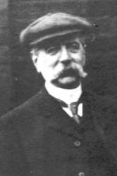

|
|
聖徒詩歌424 |
|
1 Thou hidden source of calm repose, 2 Thy mighty name salvation is, 3 Jesus, my all in all Thou art; 4 In want my plentiful supply, Amen. |
一 祂是“平靜”祕密之源， |
|
《祢是平静秘密之源》
Thou hidden source of calm repose
|
|
|
|
|


你是平静秘密之源 https://youtu.be/z6xxkT9JI3s -
http://www.zuey.com/hymn/hymn/424.mp3 -
Thou Hidden Source of Calm Repose Hymn Lyrics Words text Methodist Sing
Along Song 153
https://www.youtube.com/watch?v=sbD7j9dkAlc
| Text: | Thou hidden source of calm repose |
| Author: | Charles Wesley |
| Tune: | PATER OMNIUM |
| Composer: | H. J. E. Holmes |

Tune Information
| Title: | PATER OMNIUM |
| Composer: | Henry J. E. Holmes (1875) |
| Meter: | 8.8.8.8.8.8 |
| Incipit: | 12354 21234 36511 |
| Copyright: | Public Domain |
| Short Name: | Henry J. E. Holmes |
| Full Name: | Holmes, Henry J. E. (James Ernest), 1852-1938 |
| Birth Year: | 1852 |
| Death Year: | 1938 |
Born: March 5, 1852,
Burnley, Lancashire, England.
Died: October 1938, Burnley, Lancashire, England.
Buried: Burnley, Lancashire, England.

Son of Richard and Jane Holmes, Henry’s father and great grandfather were both solicitors; his father had offices in Colne and Burnley. Henry was educated at Clitheroe Royal Grammar School. In 1875, he became an Attorney for Common Law and was admitted a Solicitor of the High Court of Chancery. He was articled to his father in November 1869, and practiced in Burnley for over 60 years, first in partnership with his brother Richard Marmaduke as Holmes and Holmes. He continued to practice on his own as Holmes and Holmes after his brother’s death in 1894, and later as Messrs. Holmes, Butterfield and Hartley. Holmes had moved from the family home on Westgate some time after the death of his sister Susannah in 1878. By 1881, he was living at 12 Palatine Square.
Holmes was intimately associated with church and Sunday school work all his life. At age 17, he became a teacher and later a lay superintendent of Sandygate Sunday school, connected with Holy Trinity Church, a position he held nearly 20 years. From the 1880’s he took a deep interest in "The Home for Little Boys" at Farningham, Kent. His desire to help in this work led to the formation of the Burnley branch of the National Society for the Prevention of Cruelty to Children. Another organization that Holmes took a great interest in was the Burnley Law Society, which he helped found in 1883; he lived to be the last survivor of the eight founders.
Holmes is said to have written over 250 hymn tunes in his life.
圣诗鉴赏《祢是平静秘密之源》Thou hidden source of calm repose

作者及诗歌介绍
词作者查尔斯·卫斯理（另译：查理·卫斯理，Charles Wesley ，1707-1788），弟兄姊妹有十九人，他居第十八。他父亲是一位传道人，母亲也是位敬虔的基督徒，这对他一生有很大的影响。
查理从小身体就非常不好，但从小书读得很好，所以仇敌就用世界各样的事物来引诱他，使之成为一个活泼且喜欢嬉耍的少年，所具的才能远超他所得的恩典。后来在他哥哥约翰·卫斯理及许多人背后的祷告下，神怜悯他，在1726年使他就读于牛津大学。入校不久，他就和几位同学开始采纳几条标准生活的原则，发起了所谓的“循理会”运动，主要是操练过敬虔圣洁的生活，将他们的时间仔细分配于用功和灵修上，他们从六点到九点都集合一起祷告，并且一周有两次在神面前禁食祷告，也有传福音的工作，特别去探访在监狱里囚犯，向他们传福音。他们尽量使灵修时间加长，为饮食和睡觉只留下仅仅够的钟点。这种极其标准的生活，引起了同学们的嘲笑，说：“这里有一班新的循理主义派兴起了！”
毕业以后，居校供助教数年，然后在一七三五年跟随他兄长约翰往美洲去布道。他的身体本来就弱，经过长途跋涉后更显软弱。因此，一年以后就重返伦敦休养。虽然他这样有敬虔的做了，但他那时还未清楚神的救恩，他是在竭力作个基督徒，盼望能蒙神的悦纳，他不知道人得救是因着相信神的儿子，并不是因着自己的行为。他的心里因此未得着赦罪的平安。直至到一七三八年，有一位勃兰先生，是伦敦的黄铜匠，一个贫苦无学问的匠人。他除了基督以外，什么都不懂；但是因着认识基督，他却知道并察透万事。他看见查理?卫斯理的灵性软弱蒙昧，就邀他来同住，可帮助他。
在黄铜匠勃兰先生的小寓所，那身心都有病的查理?卫斯理，他阅读了一本马丁·路德（Martin
Luther）著的《加拉太书批注》。他因书中所写关系信心和行为的看法而大得帮助。他就仔细阅读、默想、交通和祈祷。直到圣灵降临节的主日，他得着了平安。
那时黄铜匠的妹妹，被圣灵感动，对他说：“奉拿撒勒人耶稣的名，起来和相信。你将从你一切的软弱中得以痊愈。”她说完这些话，就赶快逃跑。她哥哥勃兰乃朗诵：“得赦免其过，遮盖其罪的，这人是有福的。”那正在静聆的查理?卫斯理，立即抓住了对救恩所发的简单信心，他发觉自己已经与神和好了。
他打开圣经，就看见“主阿！如今我等什么呢？我的指望在乎你（诗39:7节）。信使我口唱新歌，就是赞美我们神的话。许多人必看见而惧怕，并要倚靠耶和华（诗40：3节）。”查理?卫斯理就此得着了终身的灵感，学习歌唱写诗。
后来他还带领乔治·怀特腓归向主，当怀特腓因着真理的原因，教会向怀特腓关门时，他就与怀特腓转向广场上和旷野中群众布道，于是带进了一个新的属灵复兴。他一生所写诗歌有五千五百多首诗歌，也有人说是六千多首，他所写的大多都洋溢着对救主和救恩的热爱。
查理卫斯理一生跟随他哥哥约翰卫斯理的脚踪，辛勤为主作工，常在旅途中奔忙。当时是靠骑马来旅行，有时一天需骑五十公里以上，而“马背”就是他最好的藏身处。卫斯理兄弟乃是生长在一个极为敬虔的大家庭中，他们的父亲撒母耳是个牧师，为人刚直又勤奋。而他们的母亲苏撒娜生了十九个孩子，只有九个活过幼年。苏撒娜是个敬畏神且非凡的妇人，负责照料孩子们在属灵和物质上的需要。她为每个孩子每周花一个小时，加强个人属灵的教育。她几乎成了他们全面需要的供应者。
然而，她每天清晨会分别一个小时独自与神交通，在晚上也分别一个小时，通常在中午也分别一个小时与神交通。在成群的孩子和无尽家务的忙乱中，她常随处坐下，把系在腰间的围裙翻起盖在自己身上，隐藏在小小的“至圣所”内重新得力。她生活中的许多方面都成为儿子约翰和查理所赖以建立其价值观的基础。苏撒娜向主的忠贞与火热，以及这一切敬虔的态度，深刻的影响了卫斯理两兄弟的一生。
查理和约翰卫斯理一直是两人同工，配合得那样和谐有效，一直走到路终。他一生虽不如约翰那样受人注意，受人吸引，多彩多姿的生活。但查理实在是“卫斯理运动”中不可缺少的一股力量。约翰也受到他极大的影响。在他们两人的配搭中，约翰是首领向外冲锋，向外开路，显在众人的面前。
而查理是一个背后的影响力量，并且他的诗歌使整个的复兴力量得加倍的发挥，并且使这复兴变成一个十分美丽，绚烂的见证。在一七八八年三月二十九日他在平安中被主接去。当他离世之前，他仍旧身体十分软弱，但是里面主的荣耀和同在是愈来愈加增，生命愈来愈丰盛。最后他写了一首短歌。现在他已歇了他的工，我们相信他不需用他这种天分来写诗，他要在宝座前与众圣徒一同唱更美之诗。
诗歌赏析
此诗作者用“恬静”一词贯穿全诗。恬静意为平静的、平稳的、镇定的、沉着的，态度是悠闲、泰然自若的。“恬静”是很有诗意发表的一种意境，而不光只是一种现象。
第一节说，主是“这‘恬静’隐密之源”：“源”说出主是丰富的；“恬静”则说出在主里有平安和安息，有祂就能风平浪静。主的爱也满了全丰全足。“是我帮助，是我靠山”：有主同在，我就安全；如同旧约里的庇护城（逃城），只要藏躲其中就得保护。纵然我会软弱、羞愧、跌倒、失败，我愿一再地转，转向祂。“藏身”说出内在的与主联结，是隐藏的，乃把我带到深处来摸这活水的源头。虽然外面常是喧嚣纷烦，也不会打乱我内在的平静。 第二、三节接续说到，我藏身在主里就经历主是我一切的供应：是我安息、畅逸、恩膏、平安、得益、笑脸、冠冕、供给、释放、能力、亮光、喜乐、复活等。
英文诗歌只有三节，中文诗歌加了第四节，好像为这首诗歌做了打结。第一节说，“我从一切忧困、罪缠，前来藏身在你里面”；这里的“前来藏身”是被动的、是迫不得已的，因有许多的忧困、罪缠。而第四节说，“我愿藏身在你里面，享受你的甜美同在”，这里的“我愿藏身”却是主动、甘心乐意的，因经历了二、三节中所说主的一切供应。而从“在你里面”可见已从主的供应转向了主自己－这最宝贵的源头。心态在此已有转变，也带进不同的层次。已往我这人是爱显露、爱出头，满了盲动而难等候，若不是经历藏身的益处，我怎会愿意、乐意来藏身？一藏身就享受主自己和祂的甜美同在；这同在一点都不空洞，何等享受不尽也取用不竭！
〈你是平靜秘密之源〉
“Thou Hidden Source of Calm Repose”
（《詩歌》第391首）
（一）你是“平靜”秘密之源，你是神聖全足的愛；
我們靠你，所以安全，我的幫助，我的山寨；
耶穌，我們是藉你名，能脫犯罪、憂愁、震驚。
（二）你名乃是我們救恩，賞賜喜樂入我心懷；
你名帶來平安、興奮、能力，並加永遠的愛；
你名已經賜給我們赦免、聖潔，並加天門。
（三）耶穌，你是我們一切：痛時，安舒；苦時，安息；
傷心之時，你是喜樂；亂時，平安；失時，利益；
怒目冷眼，你是笑臉；羞辱，你是榮耀冠冕。
（四）缺乏，你是我們富有；軟弱，你是我們能力；
束縛，你是完全自由；試探，你是可靠逃避；
失望、憂愁，你是喜悅；死亡，生命；我主，一切。
查理和約翰一直是兩人同工，配合得那樣和諧有效，一直走到路終。查理一生寫了五千五百首詩歌。他一生雖不如約翰那樣受人注意，受人吸引，多彩多姿的生活。但查理實在是“衛斯理運動”中不可缺少的一股力量。約翰也受到他極大的影響。在他們兩人的配搭中，約翰是首領向外衝鋒，向外開路，顯在眾人的面前。而查理是一個背後的影響力量，並且他的詩歌使整個的復興力量得加倍的發揮，並且使這復興變成一個十分美麗，絢爛的見證。在一七八八年三月二十九日他在平安中被主接去。當他離世之前，他仍舊身體十分軟弱，但是�堶悼D的榮耀和同在是愈來愈加增，生命愈來愈豐盛。最後他寫了一首短歌。現在他已歇了他的工，我們相信他不需用他這種天分來寫詩，他要在寶座前與眾聖徒一同唱更美之詩。
https://www.lrip.org/churchhistory/Big5/history/19.htm
History of Hymns: "Thou Hidden Source of Calm Repose"
“Thou Hidden Source of Calm Repose”
Charles Wesley
UM Hymnal, No. 153

Thou hidden source of calm repose,
Thou all-sufficient love divine,
My help and refuge from my foes,
Secure I am if thou art mine;
And lo! From sin and grief and shame
I hide me, Jesus, in thy name.
“Thou Hidden Source of Calm Repose” was introduced in Hymns
and Sacred Poems (1749). Later, John Wesley reprinted it
without any alteration to the text in A
Collection of Hymns for the Use of the People Called Methodists (1780),
in the section entitled “for believers rejoicing.”
In the 1808 supplement to the Methodist
Pocket Hymn Book, the final phrase of the hymn was altered from the
phrase “my heaven in hell” to a new phrase, “my all in all.” This alteration
remained in all American Methodist hymnals until the original text was
restored during the 20th century.
A final alteration to the text occurred in the 1935 Methodist
Hymnal. A phrase in stanza three, “the med’cine to my broken heart,”
was altered into a new phrase, “the healing of my broken heart.” In today’s
United Methodist Hymnal, the phrase “the healing of my broken heart” is
still used.
The tune ST. PETERSBURG, attributed to Dmitri Stepanovich Bortniansky
(1752-1825), first appeared in Johann Heinrich Tscherlitzky’s Choral-buch
(Moscow, 1825). The tune was originally used for a setting in Russian folk
songs that were appropriate for January in St. Petersburg.
Charles Wesley expresses a deep and personal faith. The poetry is a
testimony of his faith that he affirmed to the world. These words may
reflect difficulties and trials that the Wesley brothers faced as they
traveled to the developing Methodist societies and preached in hostile
environments.
As a poet with deep theological understanding, Wesley incorporated his
poetic skill into his theological thought through his hymns. The use of
paradox in this hymn resonates with Christian joy in thanksgiving in any
circumstances. Stanza four, for example, concludes the hymn with a tour de
force of successive paradoxes:
In want my plentiful supply,
in weakness my almighty power,
in bonds my perfect liberty,
my light in Satan’s darkest hour,
in grief my joy unspeakable,
my life in death, my heaven in hell.
Paradox is not just a poetic device. It illustrates the depth of theology,
which will always be contrary to the world: Jesus, who is God born as a
human; the resurrection and victory over death; the light that was polluted
by the darkness of sin; the high priest, yet the sacrificial lamb. All these
opposing elements bring the understanding of our God and our need of
salvation in Christ.
According to the Rev. Carlton Young, editor of the UM
Hymnal, the opening phrase might have come from the first line of John
Wesley’s translation of Johann Anastasius Freylinghausen’s “Wer ist wol, wie
du” (“O Jesu, source of calm repose”), which was included in the 1737
Charlestown Collection, the first hymnal published in America.
The key word in the first stanza is “repose,” or “rest.” The idea of this
“rest” may be a reference to Matthew 11:28-30, “Come to me, all you that are
weary and are carrying heavy burdens, and I will give you rest.” As people
come to God with their different burdens and problems, Jesus extends the
invitation to come to him for respite and relief.
This hymn celebrates the “redeeming name” of Jesus through biblical images
reflecting his presence and power. Jesus is praised even in the face of
grief and suffering. In the spirit of John 14:6, Charles perhaps wanted the
people to be aware that only through Jesus’ name may we receive salvation
and peace with God. All together, the first two stanzas state that the Lord
is our resting place. The stanzas celebrate comfort, power, peace, joy and
everlasting love; forgiveness, holiness and heaven, in which will result in
the faith and assurance in God.
Overall, the emphasis of the hymn is all-sufficiency in Jesus. Jesus is the
“hidden source of calm repose” even today—from the bustling of the world’s
financial crisis and from the stress of daily life.
Mr. Taniwan, a Methodist from Indonesia, is a candidate for the Master of Sacred Music degree, Perkins School of Theology, Southern Methodist University, and studies hymnology with Dr. Michael Hawn.
https://www.umcdiscipleship.org/resources/history-of-hymns-thou-hidden-source-of-calm-repose